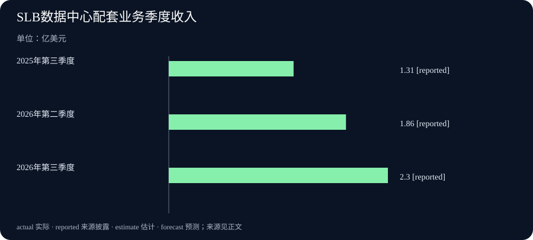

Daily Intelligence｜虚拟场景能纠正动作，机房配套收入增加
2026-10-24｜北京时间｜新闻查阅截止：2026-10-24 06:57:16+08:00，优先观察此前24小时首次公开的材料。英国零售统计有窗口内的官方公开时间；两项AI更新与SLB财报原文标注10月23日，小时未披露，不能确证严格处于24小时窗口。公告日期与实验、经营和统计对应时期分别说明。
Today's Thesis｜今天的判断
今天的两项人工智能（AI）更新，让虚拟空间里的工作更具体：Maverick 1.1增加纠正动作、利用指向信息和跨房间执行步骤的能力；Hi3D v1.0用参考图细化已有三维物体的外形。前者处理怎样行动，后者处理物体怎样成形，分别服务于不同制作环节。现实中，为数字计算提供场地和冷却的设备也留下了新经营记录：SLB数据中心基础设施业务第三季度收入为2.30亿美元。英国零售则提醒，支出金额、商品数量和单月表现各有变化。观察技术价值，可以从具体工作和交付环节开始，继续追踪是否减少返工、能否形成收入以及需求怎样延续。以上是本报对本期材料的分析。
Executive Summary｜先看三条变化
- 虚拟房间里的动作可以纠正：开发者10月23日公布Maverick 1.1功能与测试。这个AI代理，即会调用工具执行动作的软件，能够读取应用传来的近期动作、说话人和指向信息。虚拟场景软件Unity支持新格式的配套包尚未公开发布，陌生场景仍容易出错。开发者原文
- 已有粗形可以继续补几何细节：Hi3D v1.0发布模型与运行代码，把参考图和粗网格结合起来。网格是由许多小面组成的物体外形；输出只有几何形状，不包含纹理和材质。官方模型说明
- 机房设备销售增长，零售需求呈现不同读数：SLB数据中心基础设施业务收入由上年同季1.31亿美元增至2.30亿美元。大不列颠第三季度零售销售量比前季增加0.7%，但9月单月下降0.4%。一项公司的已实现销售与消费者商品需求，提供不同层面的经营信息。SLB财报、英国统计局
AI Daily｜AI与产品
Maverick 1.1：把纠正和跨房间步骤带入虚拟场景
Manisa Celal Bayar大学扩展现实实验室的开发者Eren Ata，于10月23日发表Maverick 1.1更新说明。模型在本机运行，读取应用提供的房间、物体和命令描述，再让Unity执行相应动作。Unity是制作游戏、训练和仿真场景的软件；这里的房间与物体是数字场景，模型并不直接观察现实空间。开发者发布文章
新增的撤销工具可处理最近一至三个命令。例如，使用者说“不是这个，换另一个”，系统可以先撤回动作，再对另一个物体操作。应用必须事先标明动作能否撤销，模型依照标记处理；应用标为不可逆的动作，不能靠一句“撤销”恢复。新格式还能传入谁在说话、谁看向或指向哪里，让“把那个放到架子上”有可用的指代信息，并支持跨房间找物、执行几个相连步骤。模型说明
测试呈现了不同结果。在499条由人编写的测试指令上，新版首次行动选对工具与物体的有415条，约83.2%；旧版为418条、83.8%，作者认为差异不显著。面对669条刻意陌生的情况，新版正确率只有41.6%，常在应询问时直接行动。团队自制模板测试的高分，不能代替这些更难的结果。
模型文件已经可获取，但支持近期动作、说话人和指向等新格式的Unity 1.1.0包，作者明确说尚未在GitHub发布。现有1.0包可以继续用旧格式，新功能需要使用者自行提供新格式。当前验证主要是英语、Windows笔记本与文字输入，演示语音使用文字转语音，模型读取转录文本。23日是作者公布功能与测试的日期，本期不把较早的文件更新时间写成首次上传时刻。
Hi3D v1.0：参考图辅助粗网格细化
Hi3D的官方模型说明与代码仓库均明确，v1.0于10月23日发布。工具输入一个已有的粗略三维网格，以及同一物体的参考图片，逐步增加几何细节。它建立在已有Sparc3D研究基础上，本次新公开的是Hi3D自己的模型文件、运行代码和说明。官方模型说明、官方代码与文档
这种分工把制作过程拆成两步：先有大致外形，再依据图片补细节。它输出的是几何网格，表面纹理、材质和颜色不包含在内。图片看不到的背面属于模型作出的合理补全，不能当作对真实物体隐藏部分的测量；粗形本身严重的结构错误也可能留下。输出还会重新居中、统一到标准大小，物体原有的实际大小与场景位置不会保留。
公开代码能够用于运行模型，但训练代码、论文评测程序和比较网格没有随仓库提供。最高细化等级只在指定的大显存显卡上验证，不能据此保证普通电脑都能完成。开发者若要把结果用于游戏道具、展示或其他数字制作，需要继续检查形状、所需材质与应用要求。项目有自己的Hi3D许可协议，相关第三方部分沿用各自许可。此次发布提供了更具体的制作工具，本期没有独立测量它节省多少工时。
Business Daily｜商业与产业
SLB于10月23日公布第三季度业绩。公司向能源行业提供设备和服务，也通过Data Center Solutions业务，为大型云服务商和企业设计制造模块化机房外壳、冷却系统及其他基础设施硬件。这里的数据中心，是集中放置计算设备及其供电、散热设施的场所。官方季度业绩
该业务第三季度收入为2.30亿美元，第二季度为1.86亿美元，上年第三季度为1.31亿美元。公司报告比第二季度增长23%、比上年同季增长76%。这些是已经结束季度确认的销售收入，区别于尚待交付的订单与未来增长计划；它们没有提供该项业务单独的净利润，不能据此说每笔销售都带来了同样比例的收益。
这项业务在报表中计入“All Other”，即其他业务类别，但该类别还有其他业务，不能整栏都算作数据中心。它也不是SLB的Digital数字业务分部。理解业务究竟卖什么，有助于辨认AI相关支出可能流向的具体供应环节；这组资料没有把全部收入逐笔划分成AI用途。
SLB整体第三季度收入94.49亿美元，公司披露同比增长6%。比较还受到ChampionX收购影响：今年第三季度包含全季，上年同季只包含两个月；公司称剔除此项收购影响后，全球收入同比增长2%。因此，报表增长不能全部归为原有业务自然扩大。公司拟收购Kelvion仍受交割条件和监管批准约束，预计2027年上半年完成，这也不是已计入本季结果的既成交易。
Macro Observation｜宏观观察
英国国家统计局10月23日发布9月零售资料，官方记录为07:00英国夏令时，即北京时间14:00，处于本期窗口。统计覆盖大不列颠，即英格兰、苏格兰和威尔士，不含北爱尔兰；范围是零售商品，并不覆盖全部经济或服务消费。正式发布、公开时间记录
经季节调整的第三季度销售量，比第二季度增加0.7%，比上年第三季度增加1.5%。销售量试图排除价格变化，观察买入商品的多少；季节调整则在统计上去除常见季节和日历变化的影响。第三季度描述的是7至9月整体，不能直接替换成其中一个月的表现。
9月销售量比8月下降0.4%，比上年9月仍增加0.8%。本次公告把8月比7月的变化修订为增加0.7%，先前初值为0.5%；7月比6月的变化修订为下降0.4%，先前为下降0.5%。最新9月也是初步估计。把本次版本的月份放在一起，可以看到第三季度总体增加、最后一个月回落，两项并不冲突。
金额又提供了另一层信息：9月总零售花费金额环比增加0.3%，销售量却下降0.4%。花了更多钱，不等于买到更多商品。统计局记录了零售商对天气等因素的解释，但这些受访说明并不是单独验证因果的实验。理解需求时，既要看量与钱，也要保留后续修订，不能从一个月直接推演所有商家的长期前景。
Signal Dashboard｜信号仪表盘
| 主线 | 本次具体变化 | 后续观察 |
|---|---|---|
| Maverick 1.1 | 纠正动作、指向资料和跨房间步骤 | 陌生情况何时询问，新格式配套包何时发布 |
| Hi3D v1.0 | 已有粗网格加参考图，输出细化几何 | 形状、尺寸和材质要求怎样继续处理 |
| SLB数据中心业务 | 第三季度收入2.30亿美元，上年同季1.31亿美元 | 交付需求、成本和业务盈利情况 |
| SLB整体经营 | 收入同比增长6%，剔除ChampionX影响后增长2% | 同范围比较与未来交易实际交割 |
| 大不列颠零售 | 整季销售量增长，9月单月回落 | 数量、金额、后续修订与持续变化 |
Deep Insight｜深度观察
数字工具怎样进入工作，现实配套怎样形成经营记录
本期两个AI项目，把虚拟空间的使用推进到更细的工作环节。一个处理“刚才做错了，该怎样改”，另一个处理“大致外形有了，怎样补细节”。这些问题不像整体能力排名那样显眼，却直接关系到制作过程能否继续。使用者提出的第一句话未必完整，初次生成的物体也未必可直接使用。若工具能接住纠正、保留上下文，或把粗形继续加工，数字内容的制作就有机会减少重新开始的次数。但这种可能性仍要放回实际工作中衡量，不能从几个示范直接换算成通用节省比例。
撤销功能说明，交互设计和模型能力需要配合。Maverick并不自行判断世界能否恢复，而是接收应用标记，知道哪些动作允许撤回。应用若没有记录足够状态，或一项操作本就不可逆，模型说得再自然也无法还原。更值得追踪的难点，是它能否在不清楚时先询问。陌生情况的低分表明，纠错能力增加与避免错误是两项不同进展。为使用者提供方便的恢复路径有价值，同时仍需决定哪些动作应在执行前获得确认；远程说话者的权限也应由应用管理。
几何细化则让制作链条更清楚。假设一名制作者需要游戏里的装饰物，粗形加参考图补足细节，可能是方便的起点；如果任务是制作必须与真实零件严密配合的模型，绝对尺寸和看不到的结构就很关键。Hi3D会统一输出大小，并补全不可见表面，这些特点决定后续还要做什么。这里的区别来自任务要求，不是笼统判断模型好坏。对数字制作，较实用的观察是：从输入到可用资产还剩几步，每一步由谁处理，人工修改是否真的减少。
SLB的季度资料让视线转到另一类已经发生的交易。计算设备要有地方放置，也要处理运行产生的热量，机房结构与冷却设备因此构成具体供应环节。Data Center Solutions收入增长，说明这一家公司在这些配套设备上的销售扩大了。收入并未同时回答成本、现金收支和利润是多少，也不能反推所有使用设备的AI服务已经取得足够回报。供应商确认销售与最终用户通过新工具获得收益，是链条上不同位置的经营问题。
这并不妨碍把新收入作为值得持续追踪的信号。下一步可以观察设备交付是否延续、需要多少投入，以及公司是否给出更完整的业务经营资料。SLB整体收入还受到并购覆盖期变化影响，提醒读者将“公司变大了”和“原有范围卖得更多了”分开。机房配套业务的具体数字，比把整家公司所有增长都冠以AI更能帮助理解；未来收购与扩建则要等实际落地，再进入相应时期的经营记录。
零售数据又提供了另一种需求节奏。整季买入量增加，9月却回落，金额也没有和数量同向。对经营者来说，这意味着不能只按最后一个月安排长期判断，也不能只看营业额就断定商品需求更强。数字工具是否值得采用、基础设施订单能否延续、消费品怎样备货，需要各自对应的工作记录和需求资料。把这些具体环节持续看下去，比替所有消息写出一个统一的繁荣或衰退结论，更接近真实经营。以上联系是本报的分析，几项项目和公司并没有在本期原文中宣布相互集成。
Tomorrow Watch｜明日值得追踪
- Maverick的新格式Unity配套包何时实际发布，陌生指令能否更常触发澄清。
- Hi3D使用者从粗形走到可用数字资产，还需要多少形状、材质与尺寸处理。
- SLB数据中心配套设备需求与交付能否延续，公司是否披露更完整的经营结果。
- ChampionX同范围比较和Kelvion拟收购后续条件，区分本季收入与未来安排。
- 大不列颠零售后续修订与三个月变化，数量和金额是否继续呈现不同方向。
One Chart｜一张图
下图展示SLB数据中心基础设施业务收入：2025年第三季度1.31亿美元、2026年第二季度1.86亿美元、2026年第三季度2.30亿美元。原文依次披露131、186、230百万美元，本图换成亿美元。图表原始来源，问答13与14
图中的 reported 表示来源披露的数字。这三项是已结束季度的收入，不是利润、全部AI业务收入或预测。三个指定季度并不连续，间隔也不相等，中间没有展示2025年第四季度和2026年第一季度，不能据此补出增长路径或相加当全年销售。图表观察的是同一项配套硬件业务，业务用途和盈利仍需另看资料。

Quote of the Day｜今日引用
“I do not wish them to have power over men; but over themselves.”
— Mary Wollstonecraft（玛丽·沃斯通克拉夫特），《女权辩护》第四章，1792年。原著全文
中文：我并不希望她们支配男人，而是希望她们能够主宰自己。
这里的“她们”指女性。作者回应卢梭关于女性教育的看法，主张女性通过教育运用自己的理性，获得自主，而非借影响男性取得支配力量。本句属于女性教育与自主的历史论述，中文为本报译文。本期保留这一语境，不把它改写成对现代技术或企业经营的评论。
Action Items｜今天值得思考什么
- 做错以后怎样恢复？ 试用场景代理时，记录哪些动作能撤销、哪些必须先确认，并检查不清楚的命令是否得到澄清。
- 细节增加以后还缺什么？ 评估三维模型时，把几何外形、实际尺寸、材质和最终用途分别列清，抽样计算仍需的人工工作。
- 这笔收入来自哪项交付？ 阅读数据中心相关财报时，先确认卖的是哪些设备，再区分收入、利润和未来订单，不扩大到公司全部业务。
- 同比比较的公司范围相同吗？ 核对并购前后包含哪些月份和业务，再理解报表增长与调整比较，未来交易等实际完成后另行观察。
- 钱与量、单月与整季一致吗？ 分析消费需求时同时保留销售金额、销售量和参考时期，采用最新修订值，为判断留下更新空间。
信息边界
本期固定截止为2026-10-24T06:57:16+08:00，优先观察窗口自2026-10-23T06:57:16+08:00开始。Hi3D官方声明、Maverick开发者新公布文章及SLB原文均标注10月23日，小时未披露，不能确证严格24小时；英国零售官方公开时间为23日07:00英国夏令时，即北京时间14:00，确认在窗口内。
AI项目训练、评估和文件准备发生于此前，不把更新文章日期说成所有工作当天完成。SLB财报对应截至9月30日的第三季度，图另列上年同季与本年第二季度；英国资料对应9月与7至9月。技术结果按开发者披露，本报没有独立重复全部实验；建议与跨事件联系属于本报分析。